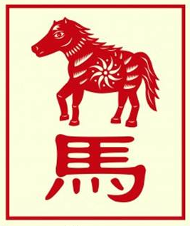

The Chinese Zodiac: Horse

- Fixed Season: Summer
- Fixed Direction: South
- Fixed Element: Fire/Yang
- Associated Sun Sign: Gemini
Those born under the sign of the Horse are a flexible group of people. They tend to be stubborn when it comes their ideas, but they are also incredibly patient when it comes to hearing out what other people have to say. They favor straight forward, occasionally blunt conversation. And yet they generally avoid starting up any unnecessary trouble. This combination then makes those under the Horse sign a bit of a puzzle to the people around them. Though this certainly does not stop people from trying to figure them out.
In spite of some of their misgivings, Horses are also incredibly loyal friends and partners. Perhaps it is because first impressions have a lasting effect, or simply that they are inclined to do well by others. Whatever the case for an individual, however, they are consistently there when friends need a person to turn to or a shoulder to lean on. They are also quite capable of resolving conflicts, both their own and other people's. Altogether then, those born under the sign of the Horse are some of the most favored members of society; and though they don't often aspire to greatness they tend to achieve a manner of it through the compliments and adoration of their friends.